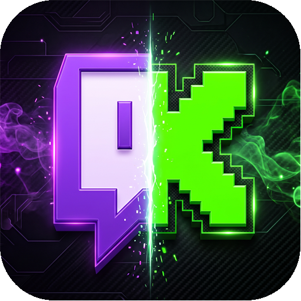

Login Kick
Login Twitch
Twitch ⚙
Sair da conta
Farmar pontos
Modo leve (160p)
Lives ao mesmo tempo
Foco em bônus
Bônus
Automático
+15% XP (300)
+15% Capture Boost (500)
+15% Secret Lure (1.000)
Iniciar com o Windows
Avisar bônus
Atualizar
Pontos ▸
Sair
☆
Abrir live
✕
—
⋮